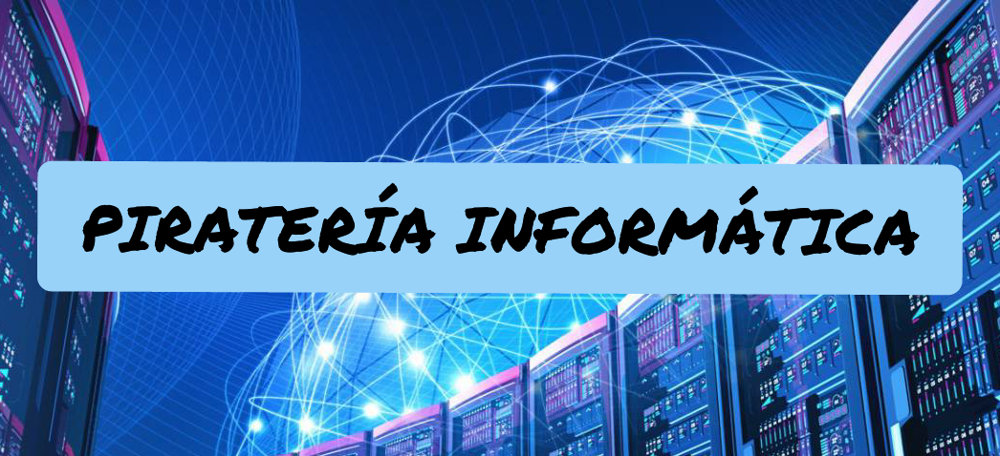
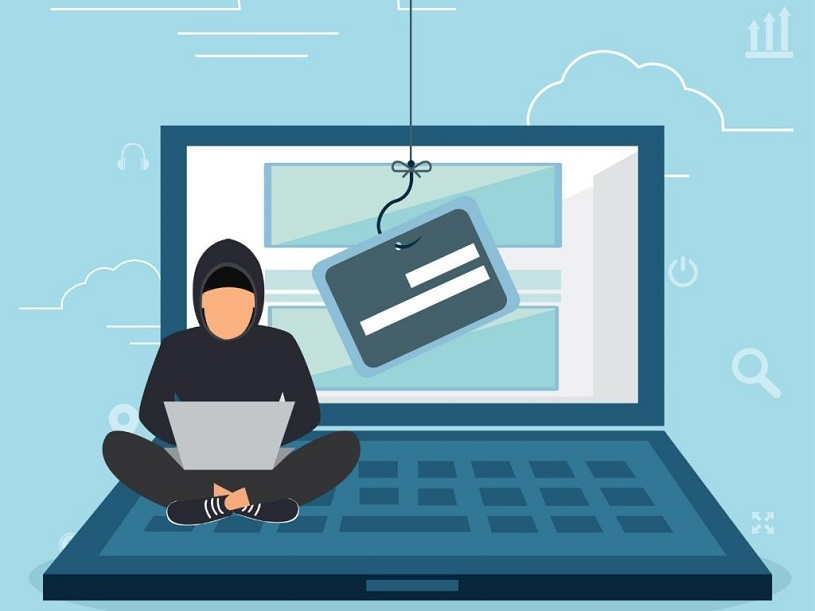
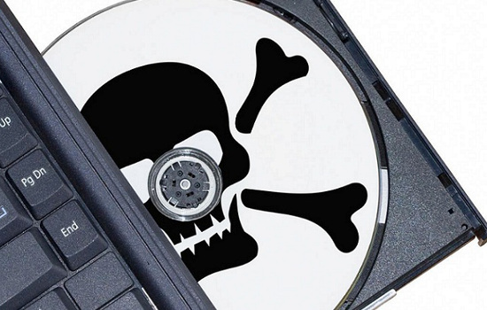

AUTOR: Flores Uribe Denisse Margarita

¿QUÉ ES?
La piratería es un término popularizado para referirse a la copia de obras literarias, musicales, audiovisuales o de software efectuada sin el consentimiento del titular de los derechos de autor.
Consta de romper la seguridad de determinados programas, la mayoría de las veces populares y muy necesarios para llevar a cabo determinadas tareas, como Photoshop o Windows, para poder eliminar o bloquear cualquier código que impida su libre uso, para luego ser distribuidos con la firma de algún grupo o “Team” de manera gratuita en las principales redes de intercambio como Torrent o eMule, de manera bastante frecuente.
Es común pensar que la piratería es en cierto modo "justa" debido al punto en que los hackers le arrebatan a los empresarios ricos su software, software valioso y que llevó años de duro trabajo desarrollarlo, para dárselo a aquellos que no están en condiciones de poder adquirirlo, pero no nos engañemos, la piratería también es un negocio que mueve muchísimo dinero, nada se hace de manera desinteresada. |
TIPOS
Existen varias modalidades de piratería de software, las cuales corresponden a un tipo específico de piratería.
Piratería de usuario final:
La piratería de usuario final tiene lugar cuando una única copia con licencia de un software es instalada en diferentes computadoras. Otra forma común de piratería de usuario final ocurre cuando se utiliza una versión «crackeada» del software. Un software crackeado es aquel en el que el usuario ingresa una clave de registro (que invalida la protección de copia), o códigos clave generados ilegalmente que desbloquean una versión limitada.
Piratería de revendedor:
La piratería de revendedor ocurre cuando un revendedor distribuye copias de un único software a diferentes clientes; eso se da principalmente con los sistemas operativos y softwares precargados en computadoras nuevas. El usuario no recibe los discos, manuales y registro del software. La piratería de revendedor acontece también cuando se venden versiones falsificadas de software, imitando embalajes, sellos y documentos del software original. Los signos que indican piratería de revendedor son varios usuarios con el mismo número de serie, falta de documentación original, una configuración incompleta y la ausencia o insuficiencia de documentación original.
Piratería de internet:
La piratería de Internet ocurre cuando se pone a disposición de los usuarios una transferencia electrónica de software con derechos de autor. Operadores de sistemas y/o usuarios ponen a disposición materiales con derechos de autor en internet para que otros puedan copiarlos y usarlos sin la licencia correspondiente. Frecuentemente, los hackers distribuyen o venden software «crackeado». El creador no recibe ninguna suma de dinero por su software distribuido de esta manera. Es una violación de los derechos de autor del creador.
Violación de marca registrada:
Esta infracción sucede cuando una empresa no acreditada se presenta como negociante autorizado, técnico, proveedor de soporte o revendedor, o usa indebidamente un nombre de marca registrada.
Otros tipos de piratería:
Otra técnica utilizada por piratas de software es obtener ilegalmente una copia registrada de software. El pirata compra una única copia y la utiliza en varias computadoras. Otra técnica es la compra de software con tarjetas de crédito clonadas o robadas. |

CAUSAS
Escasa sensibilización del público
La piratería carece del estigma social negativo que sensibilizaría al público sobre el hecho de que se trata de una actividad delictiva. Con frecuencia, el público no se da cuenta de que al comprar productos pirateados o participar en actividades ilícitas puede estar contribuyendo a la proliferación de prácticas ilegales.
Alta demanda de bienes culturales:
La demanda de música, películas, libros y programas informáticos es muy alta, lo que podría acarrear el desarrollo de un mercado ilegal para cubrir las necesidades de los consumidores.
Malentendidos sobre la piratería:
El público ve con frecuencia la piratería como una manera de lograr un acceso más barato a versiones de una obra de igual calidad que la original, pero ignora las repercusiones que esa actividad ejerce en la creatividad, las industrias creativas y los sectores conexos.
Protección ineficaz de la propiedad intelectual y poco respeto de los derechos:
La existencia de leyes mal redactadas o incompletas, y su aplicación vacilante, contribuyen directamente al aumento de la piratería.
El precio elevado de los bienes culturales:
La creación, producción y distribución de bienes culturales son costosas y los múltiples costos que se añaden antes de que el producto llegue al consumidor aumentan el precio del producto final. En consecuencia, se considera que la pobreza es un factor importante que contribuye a la ampliación de la piratería. Debido a que los precios de los productos originales resultan con frecuencia muy elevados para el público, existe un mercado permanente para los bienes pirateados, que son más baratos.
Dificultad de acceso a las obras originales:
Las existencias de productos legítimos en tiendas y bibliotecas son a veces insuficientes, en especial en los países en desarrollo. Las medidas técnicas de protección de los productos en formato digital se consideran obstáculos al acceso a ciertas copias, lo que, por tanto, limita la disponibilidad de las obras originales para el público en general.
Las elevadas ganancias de los piratas informáticos:
Los piratas no cubren ningún gasto comparable a los de la producción de bienes culturales originales, debido a que la inversión inicial para la reproducción y distribución ilícitas es limitada. Por eso, la posibilidad de obtener ganancias considerables y de manera fácil es otra de las razones que explican la ampliación y persistencia de la piratería. |
CONSECUENCIAS
Repercusiones en la creatividad:
La piratería puede conducir al éxodo de creadores talentosos, lo que priva a los países de la riqueza que representa la creatividad local. Por ejemplo, la creciente piratería en la mayor parte de los países de África ha llevado a muchos artistas a salir de su país para crear y presentar sus obras en Europa, donde son mejor retribuidos, gracias al sistema vigente de derecho de autor.
Repercusiones en la diversidad de las expresiones culturales:
Quienes se dedican a la piratería se interesan principalmente en una pequeña parte de los álbumes musicales o las películas más populares en el plano internacional y, por lo general, demuestran poco o ningún interés en ofrecer obras de artistas locales.
Repercusiones en las industrias culturales y el desarrollo:
La piratería destruye los cimientos de las empresas culturales locales e influye de manera negativa en sus relaciones con los asociados extranjeros. Además, la piratería socava la industria legal, que no puede competir de manera justa con los bajos precios derivados de la actividad ilícita. De esa manera, obstaculiza no sólo el desarrollo de las industrias culturales, sino también el desarrollo económico en general, ya que las empresas no pueden crecer y extenderse de manera sostenible.
Repercusiones en el empleo:
En términos sociales, el daño que sufren las empresas debido al efecto nocivo de la piratería se refleja por último en los empleos de las industrias creativas. Los productos pirateados llevan a un estancamiento de la industria legítima, que a su vez ofrece menos empleos.
Repercusiones en la inversión extranjera:
Las inversiones en el sector cultural de un país pueden ser importantes y duraderas cuando los inversores encuentran un sistema adecuado de derecho de autor, así como un verdadero respeto del mismo. Si falta alguna variable de esta fórmula, el país pierde la capacidad de atraer a esas inversiones y desarrollar sus propias industrias culturales, junto con los beneficios complementarios del aumento de oportunidades de empleo, creación de riqueza e ingresos fiscales.
Vínculos con las organizaciones delictivas:
La piratería es un delito que ocasiona víctimas. Con frecuencia, constituye una fuente lucrativa de ingresos para importantes organizaciones delictivas internacionales. Las cuantiosas ganancias que genera financian en muchos casos otros tipos de delitos graves, como el tráfico de seres humanos y armas, el tráfico de drogas, la estafa mediante tarjetas de crédito y el lavado de dinero. |

|
PIRATAS INFORMÁTICOS
Los piratas informáticos, también conocidos como hackers, al igual que como ocurre en el comercio marítimo o en las rutas, están al acecho para interceptar la navegación y el traslado de esa valiosa información para usarla para fines malintencionados y su propio financiamiento.
Para entender bien de qué hablamos cuando nos referimos a un pirata informático, vamos a definir a un ciberdelincuente como un experto en tecnología que utiliza sus habilidades y conocimientos para realizar operaciones ilegales. Las mismas le permiten acceder a la información confidencial de otros usuarios.
Los hackers suelen ser los mejores programadores, pero han usado su capacidad para minar la red con trampas que pueden causar importantes pérdidas monetarias reales tanto en empresas como en personas individuales |
TIPOS DE PIRATAS INFORMÁTICOS
En términos generales podemos definir dos grandes tipos de piratas informáticos: los white hats y los black hats( Hackers de sombrero blanco y los Hackers de sombrero negro). Los hackers éticos y los hackers criminales.
Los hackers de sombrero blanco son profesionales altamente cotizados en el mercado, ellos pueden encontrar rápidamente las vulnerabilidades de las empresas para corregir las fallas de seguridad y disminuir las debilidades de los códigos.
Los hackers de sombrero negro son aquellos programadores que también buscan las debilidades del código, pero su objetivo es el delito y no la mejora de la seguridad del sistema.
Entre los motivos más populares que pueden motivar el ataque del criminal informático se encuentra la posibilidad de destruir, secuestrar o difundir información confidencial.
No todos los hackers quieren dinero, algunos buscan desafiar al sistema, generar pérdidas en corporaciones específicas o simplemente perpetrar daños a la identidad corporativa.
Dentro de los black hat hackers podemos encontrar:
Crackers: Expertos que buscan hacerse de contraseñas para o invadir equipos con determinados virus para modificar el funcionamiento de determinados software.
Phreakers: Son piratas informáticos que se dedican exclusivamente al atentado en el sector de las telecomunicaciones.
Grey hackers: Los hackers grises, esos que se dedican a traspasar los niveles de seguridad de diferentes empresas para poder ofrecerles en consecuencia servicios contra las vulnerabilidades de los sistemas que previamente interceptaron.
Newbie o neófitos: En términos coloquiales del lunfardo los podríamos llamar “los pichis”, los piratas nuevos e inexpertos que están haciendo experimentaciones pero que son más propensos a dejar rastros.
Hackivistas: Los piratas informáticos más populares en los medios de comunicación ya que su actividad no está directamente motivada por fines económicos sino que buscan defender alguna cuestión social, política y/o religiosa. Por ejemplo, los ataques de Anonymous contra el mundial de fútbol en Brasil 2014. |

PIRATERIA INFORMÁTICA EN MÉXICO
Según estadísticas de la Cámara Nacional de la Industria de Transformación (Canacintra) México ocupa el cuarto lugar mundial en los delitos de piratería y contrabando y el primer sitio en América Latina, de igual forma la piratería cuesta el 1.25% del PIB, y además constituye hoy en día el segundo delito más preocupante en el país después del narcotráfico.
Pese a que a nivel internacional, México ha firmado múltiples tratados, actas y convenios con el propósito de erradicar la piratería, es triste darse cuenta de que la población no está concientizada de que este delito, propicia más ilícitos como la corrupción, cohecho, secuestro y extorsión, entre otros, y que lejos de beneficiar perjudican a todo el País.
En estadísticas realizadas en México, basadas en entrevistas a consumidores, vendedores, distribuidores y productores de piratería, es penoso notar que solo un bajo porcentaje de la población manifestó inquietud ante la posibilidad de que la piratería fuera un foco productivo de corrupción, contrario sensu, la mayoría de los encuestados indicaron que sabían que la venta y adquisición de bienes piratas es ilegal, justificando sus acciones en la necesidad económica y la falta de oportunidades. |
¿COMO COMBATIR LA PIRATERÍA INFORMÁTICA?
El combate a la piratería no ha sido exitoso. Diversos estudios señalan que muchos millones de mexicanos consumen piratería física y digital, no obstante que existen leyes administrativas y penales que sancionan severamente esa actividad ilícita. El pasado 1° de julio se adicionaron varios delitos en el Código Penal Federal en materia de derechos de autor. Por ejemplo, el artículo 427 bis sanciona con prisión de seis meses a seis años y de quinientos a mil días multa a quien, a sabiendas y con fines de lucro, “eluda sin autorización cualquier medida tecnológica de protección efectiva que utilicen los productores de fonogramas, artistas, intérpretes o ejecutantes, así como autores de cualquier obra protegida por derechos de autor o derechos conexos”.
Esta reforma se realizó en el marco de los compromisos del Estado mexicano al firmar el nuevo Tratado entre los Estados Unidos Mexicanos, los Estados Unidos de América y Canadá (T-MEC). Pero, ahora, se requieren nuevos conocimientos y estrategias para perseguir estos delitos, pues la policía y peritos convencionales no están capacitados en esta materia. El futuro de las creaciones artísticas, literarias, tecnológicas, así como el beneficio económico de las empresas y personas que participan en la cadena productiva de la economía formal dependen de ello.
Independientemente de los medios que existen para regular los derechos de propiedad intelectual, (que son muy poco conocidos y explotados) se deberían realizar adecuaciones a la legislación especial en la materia, lo cual permitiría reconocer y prever las conductas violatorias, poniendo al alcance de autores y titulares las herramientas eficaces en la defensa de sus derechos; de igual forma, elevar las penas y sanciones en la tipificación de los delitos, así como que el Estado desarrolle campañas públicas de concientización y que desde el nivel básico se enseñen los valores y respeto por las obras de propiedad intelectual, manifestando que su violación es delito grave y de un riesgo latente que nos afecta, creando desempleo, falta de desarrollo empresarial, desánimo de la inversión en el País y por ende cero crecimiento. |


Última actualización: 8/enero/2020 |